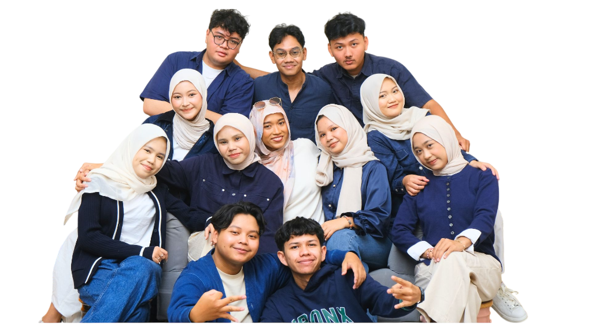

Lokasi Pengabdian Kami
SMA Muhammadiyah 9 Brondong terletak di Kecamatan Brondong, Kabupaten Lamongan, Provinsi Jawa Timur.
Program Kerja Unggulan Kami
Berikut adalah 6 pilar pengabdian KKN Sahabat Sekolah UMY untuk mencerdaskan dan membentuk karakter tangguh bagi siswa-siswi SMA Muhammadiyah 9 Brondong.
Bijak Menggunakan AI
Sosialisasi pemanfaatan teknologi AI secara cerdas dan etis dengan rumus jitu Metode CTIF untuk meningkatkan kualitas belajar tanpa plagiasi.
Creative Presentation
Workshop Canva untuk membekali keterampilan desain digital ditambah pelatihan public speaking untuk meningkatkan rasa percaya diri siswa di depan umum.
Karakter Muda
Edukasi pencegahan bahaya pergaulan bebas (revenge porn, kehamilan dini) serta literasi keuangan dasar guna menghindari gaya hidup konsumtif/pinjol.
Gerbang Kampus
Sosialisasi profil UMY, program studi, rincian biaya kuliah, serta berbagai skema beasiswa perguruan tinggi untuk membuka wawasan masa depan siswa.
English Connect
Pelatihan interaktif Bahasa Inggris dasar (daily conversation & vocabulary) untuk meningkatkan rasa percaya diri dan keterampilan komunikasi siswa.
Semarak Merdeka
Kegiatan seru peringatan hari kemerdekaan melalui aneka lomba edukatif, pentas seni, serta penguatan jiwa kebangsaan dan kebersamaan di sekolah.
Dosen Pembimbing Lapangan (DPL)
"Membimbing mahasiswa KKN Sahabat Sekolah UMY untuk memberikan dampak nyata di SMA Muhammadiyah 9 Brondong."
Siapa Kami?
Kami adalah 12 mahasiswa Universitas Muhammadiyah Yogyakarta (UMY) dari 4 program studi yang tergabung dalam Kelompok KKN Sahabat Sekolah Jawa Timur 2026.

Tembok Kesan & Pesan Digital
Tuliskan pesan, kesan, atau ucapan apresiasi Anda untuk Mahasiswa KKN Sahabat Sekolah UMY! Pesanmu akan langsung tampil di Papan Besar bawah ini.